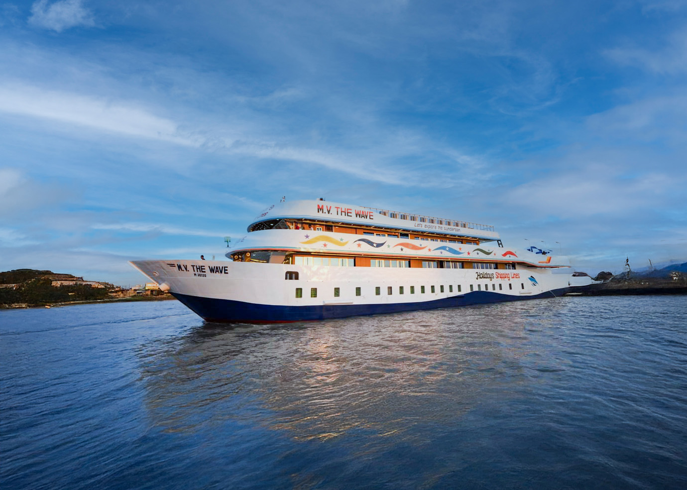

スンダルバンスについて
スンダルバンス（Sundarbans）は、バングラデシュ南西部に広がる世界最大のマングローブ林で、ユネスコ世界遺産に登録されています。ベンガルトラの生息地としても有名です。
有名な観光地
マングローブの森

潮の満ち引きによって変化するマングローブ林は、独特な生態系を作り出しています。ボートでの探検ツアーが人気です。
ベンガルトラの生息地

スンダルバンスは、野生のベンガルトラが自然の中で見られる数少ない場所です。ただし、安全のため専門ガイドの同行が必要です。
カチャ島（Kotka Beach）

スンダルバンス内にある美しいビーチで、野生のイルカを見ることができます。
ハリンボール（Hiron Point）

野生動物の観察に最適な地点で、ベンガルトラの足跡を見つけることができます。
ドゥブラー島（Dublar Char Island）

漁村文化を体験できる島で、地元の漁師の生活を見学できます。
カラマジュール（Karamjol）

野生動物保護区で、クロコダイルや鹿などの動物を観察できます。
クルーズ体験
穏やかなマングローブの水路を進むクルーズでは、ベンガルトラの足跡やワニ、シカ、さまざまな野鳥など多彩な自然を間近に感じられます。ゆったりとした時間が流れ、夕暮れ時の黄金色の川面と夜空に瞬く星が旅をより特別なものにしてくれます。